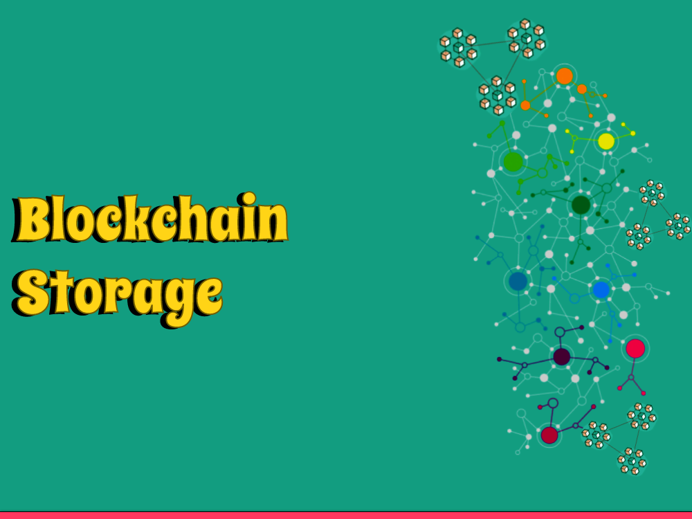

Blockchain innovation has acquired huge consideration lately because of upsetting different industries potential. One of the critical highlights of blockchain innovation is its capacity to store information in a safe and decentralized way. In this article, we will investigate the various kinds of capacity utilized in blockchain innovation.
1: Appropriated Storage
Appropriated capacity is one of the essential techniques utilized in blockchain innovation to store information. In a dispersed stockpiling framework, information is recreated across various hubs in the organization. Every hub keeps a duplicate of the information, and all hubs in the organization are liable for keeping up with the honesty of the information.
One of the vital advantages of disseminated stockpiling is that it is exceptionally impervious to oversight and information altering. Since the information is reproduced across numerous hubs, it is hard for any one hub to control the information without the arrangement of different hubs in the organization.
2: Hash-based Storage
Hash-based capacity is one more technique utilized in blockchain innovation to store information. In a hash-based capacity framework, information is changed over into a fixed-length hash esteem utilizing a numerical calculation. The hash esteem is then put away on the blockchain.
One of the vital advantages of hash-based capacity is that it is exceptionally secure. Since the hash esteem is extraordinary to the information that it addresses, it is challenging for anybody to alter the information without changing the hash esteem.
3: Off-chain Storage
Off-chain capacity is a strategy utilized in blockchain innovation to store information beyond the blockchain. Off-chain capacity is in many cases used to store a lot of information that can't be productively put away on the blockchain.
One of the vital advantages of off-chain capacity is that it can altogether diminish the capacity prerequisites of the blockchain. Overwhelmingly of information off-chain, the blockchain can stay lean and effective, taking into account quicker exchange handling.
4: InterPlanetary Document Framework (IPFS)
The InterPlanetary Document Framework (IPFS) is a distributed convention utilized for putting away and sharing records. IPFS is frequently utilized in blockchain innovation to store a lot of information off-chain.
One of the vital advantages of IPFS is that it is profoundly versatile. Since records are put away across different hubs in the organization, it is hard for any one hub to control or erase the information without the arrangement of different hubs in the organization.
5: Sharding
Sharding is a strategy utilized in blockchain innovation to segment the information into more modest subsets called shards. Every shard is put away and handled by an alternate gathering of hubs in the organization. This strategy can assist with expanding the capacity limit and adaptability of the blockchain by considering equal handling of exchanges.
6: State Channels
State directs are off-chain instruments that permit clients to execute without utilizing the blockchain. State channels empower clients to make a confidential correspondence channel among themselves and manage numerous exchanges without broadcasting them to the organization. This technique can assist with diminishing the heap on the blockchain, as the need might arise to be recorded on the blockchain.
7: Plasma
Plasma is a layer 2 scaling answer for blockchains. Plasma is intended to take into consideration the formation of sidechains that can cycle exchanges quicker and more effectively than the principal blockchain. Plasma can assist with lessening the heap on the principal blockchain, while as yet keeping up with the security and decentralization of the organization.
8: Cloud Storage
Distributed storage is a capacity choice that considers the capacity of information on far off servers oversaw by outsider suppliers. In blockchain innovation, distributed storage can be utilized to store information off-chain, lessening the heap on the primary blockchain. In any case, the utilization of distributed storage can likewise present centralization and security gambles on the off chance that the information isn't as expected got.
Conclusion
All in all, Blockchain innovation offers an assortment of capacity techniques that can be utilized to store information in a solid and decentralized way. Whether you decide to utilize conveyed capacity, hash-based capacity, off-chain capacity, or a blend of these techniques, it is critical to painstakingly think about your capacity necessities and pick a strategy that best suits your requirements.
Thank you for reading, and stay tuned for more exciting insights into the world of blockchain and cryptocurrencies!